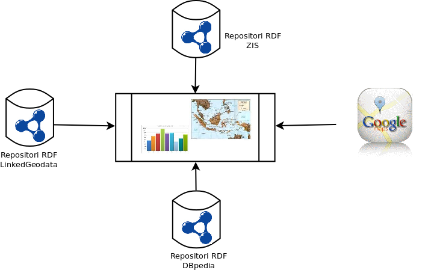

Open Data Zakat Infaq Shodaqoh
Latar Belakang
Zakat adalah sebagi salah satu pilar Islam yang berfungsi untuk memeratakan kesejahteraan masyarakat. Keberadaan informasi siapa yang memberi dan berhak menerima zakat masih kurang dikelola dengan baik sehingga seringkali zakat tidak dapat merata. Untuk itulah diperlukan sistem informasi satu atap dan terbuka untuk seluruh masyarakat.
Apakah Open Data Zakat Infaq dan Shodaqoh(ODZIS) itu ?
ODZIS adalah sebuah layanan yang bertujuan untuk mengumpulkan dan mempublikasikan data yang terkait dengan Zakat Infaq dan Shodaqoh dengan prinsip Open Data. Pada umumnya data yang ditampilkan di web berupa html, PDF, Doc dan lain-lain dimana hal ini menyebabkan mesin sulit memproses kembali data tersebut untuk digunakan pada aplikasi lain. Mengapa sulit ? Format tersebut hanya dapat dibaca oleh manusia dan terkadang bersifat proprietari (harus memiliki software tertentu untuk membacanya). Saat ini, jika kita menggunakan data dengan format tersebut, maka kita harus melakukan copy-paste ke dokumen lain terlebih dulu. Apabila hanya satu data tidak menjadi masalah, bagaimana jika ribuan bahkan jutaan data? Tentunya kita membutuhkan mesin dalam hal ini komputer untuk memprosesnya. Untuk itulah diperlukan layanan Open Data yang bertujuan mempublikasikan data ke khalayak luas dengan format data yang memungkinkan pihak lain dapat memakai ulang data tersebut untuk kebutuhan lainnya. 
ODZIS ini untuk siapa ?
- Lembaga Amil Zakat
- Mustahiq (pemberi zakat)
- Muzakki (penerima zakat)
- Developer Aplikasi
- Akademisi
- Pemerintah
Bagaimana cara berkontribusi di ODZIS ?
Siapapun anda dan dengan background apapun (IT dan NON IT) dapat berkontribusi disini. Kami membutuhkan anda untk bergerak mengumpulkan dan mempublikasikan data ini. Lebih lanjut simak di halaman Kontribusi
Bagaimana cara memakai ODZIS ?
Kami akan menyediakan data dump dalam bentuk CSV dan RDF. Selain itu, disediakan pula facet browser untuk pencarian dan sparql end point untuk developer aplikasi.
Saat ini kami masih dalam tahap pengumpulan data. Namun anda dapat melihat dari teknologi yang kami gunakan disini. Untuk perkembangan layanan ini, silahkan ikuti kami di twitter @opendatazis